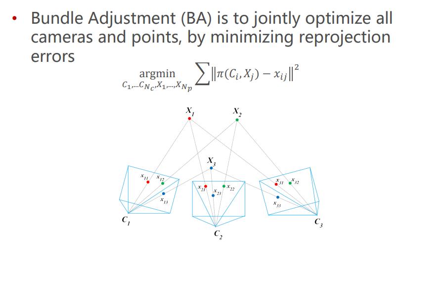
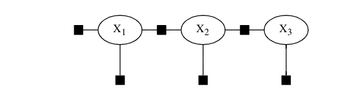
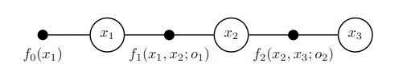
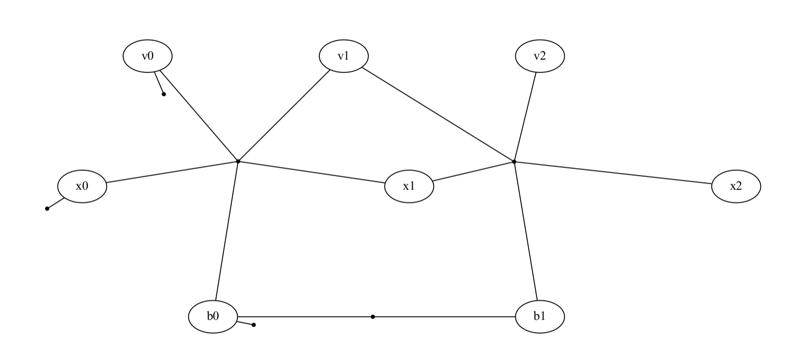

Simple-LIO-SAM——（七）GTSAM快速入门
- ⭐ Zeal's Blog
- 🛠 知乎专栏
- 🌀 项目仓库
前言
LIOSAM其中的两大模块imuPreintegration和mapOptimization都依赖了因子图优化框架——GTSAM。 为了确保本项目的自洽性以及后面章节讲解的展开，不介绍一下因子图后端优化算法似乎说不过去。但是笔者目前对因子图的原理还没有进行非常详细的推导，因此这部分 内容会偏向如何对GTSAM快速入门。当然，最快速的入门方式就是完整地阅读一遍GTSAM的官方教程。这部分章节只是拙劣地进行知识的搬迁，当然不是直接将 GTSAM的教程直接翻译过来。本章节会介绍GTSAM快速入门的知识，同时讲解GTSAM提供的examples中跟LIOSAM联系较为紧密的一两个，同时指明LIOSAM中的用法出处。 至少阅读完本章节后应该能够对因子图有基本的认识，并且能够看懂LIOSAM中对GTSAM的使用
SLAM后端——图优化
问题描述
让我们先回归问题本身。在SLAM中，我们可以拥有多个输入，我们的最终目的是获取一条最准确的轨迹，然后使用这条准确的轨迹实时构建地图。在LIOSAM中，我们有以下输入： 1. IMU数据； 2. 点云数据； 3. GPS数据（可选）； 4. 回环检测；
我们的问题是如何使用这些数据计算出一条最准确的历史轨迹，使用该轨迹就可以将对应的点云投影到地图坐标系，以此来建立一个点云格式地图。 PS：这只是SLAM的一个形式，就是优化出一条光滑准确的轨迹，这也是在LIOSAM中使用的方法，因此本文以这种类型作为讲解。
非线性优化
在SLAM领域后端优化的一个分支是滤波器方法，主要以扩展卡尔曼滤波方法为主，采用隐马尔科夫假设，只保存上一次状态，并通过当前输入预测当前状态，偶尔通过观测修正状态。具体可见本博客的卡尔曼滤波相关文章。
目前的后端优化主要以各种非线性优化方法为主，把批量的位姿加入目标方程（projective function）一起优化，得到具有更好的全局性质的解。 \[ \mathbf{x}^* = \argmin_{\mathbf{x}}\mathbb{F}(\mathbf{x}) \] 其中，\(\mathbb{F}\)是历史轨迹引入的各个误差之和 \[ \mathbb{F}(\mathbf{x}) = \sum\mathbf{e}(x_i,c_{ij},x_j) \] \(x_i,x_j\)是历史时刻的位姿，\(c_{ij}\)是两者之间的约束（可以认为是观测或者输入）
PS：再重申一句，SLAM后端体系很庞大，不是一篇文章能说清楚的，笔者目前也还没有这个能力。目前只求能够稍微讲清楚GTSAM在LIOSAM中是怎么被使用的即可。
为了求解非线性方程在不同的SLAM任务中的特点，又发展出各种不同的优化方式，比如VIO中有Bundle Adjustment，有其他叫PoseGraph的，还有GTSAM中使用的FactorGraph。 简单理解就是这些都是非线性方程和求解在不同的任务场景中的细分。后面有机会再单独列一篇文章讲解这些后端优化方法把。 
图优化
以下内容大量引用自GTSAM-repo/doc/gtsam.pdf
为了批量优化历史位姿\(\mathbf{x} = \{x_0, x_1, x_2, ... x_i\}\)，研究者将图论引入SLAM后端优化。每一个机器的位姿\(x_i\)是图中的顶点；通过各种里程计计算，比如连续位姿间的IMU积分结果或者点云匹配结果，成为两个位姿\(x_i,x_j\)之间的边；对于一些额外的观测，比如GPS数据，成为连接顶点的一元边（只有一端连接到顶点）。比如下图(引用自：GTSAM-Hands-on Introduction) 
GTSAM
GTSAM使用因子图（FactorGraph）作为通用的图问题描述框架，并为各种机器人任务提供实现好的优化算法API，使得研究者快速开发后端优化框架。
图优化（GraphOptimization）vs. GTSAM中使用的因子图优化（FactorGraph Optimization）区别 vs. BA
- 图优化似乎一般指位姿图（PoseGraph）的优化，图中的顶点都是机器人的位姿
- BA(Bundle Adjustment)似乎一般指在视觉SLAM中对地标（Landmarks）和位姿同时优化的方法
- GTSAM的因子图除了能够构建位姿图之外，还可以将速度、偏差、IMU预积分等当作顶点和边加入图中。另外，GTSAM框架实现了iSAM和iSAM2两个递增式优化器
重要概念
变量（variables）：因子图中的每一个顶点是一个代求的变量。假设我们只需要求解每一个时刻的机器人姿态，那么每个顶点就是该时刻的机器人位姿，如上图中的\({X_1,X_2,X_3}\)
值（values）：值是每个变量数值。在调用优化器对因子图做优化时，我们要先为每个变量设置初始值，优化结束后再从优化器中拿出每个变量优化后的值。
因子（factors）：因子是因子图中的边，每条边都可以视为一个因子，每个因子又可以认为是一个约束。比如连续两个位姿之间可以由IMU计算出两个位姿的变换，该变换作为一条边加入因子图连接两个变量（二元因子：binary factor）；又或者在某个时刻有GPS数据输入，GPS数据是一个观测，也可以作为一个因子加入因子图，这时候GPS的边只有一端连接到变量（一元因子：unary factor）。
因子图（factor graph）：因子图由顶点（变量）和因子（边）构成。
优化器（Optimizer）：因子图只是建模了SLAM的历史位姿和输入与观测间的关系，如何求解这个因子图也就是如何设置变量使得整个图最符合所有的约束（误差最小）则需要用到优化器。除了最常见的求解非线性问题的Gaussian-Newton和Levenberg-Marquardt优化器之外，GTSAM还实现了两个增量式优化器iSAM,iSAM2
键（Keys）：往因子图添加因子需要指定该因子连接到哪些变量。GTSAM中使用键来指明。一元因子需要指明其连接到第几个变量；二元因子需要指明其连接到哪两个变量。因子图中每个变量的键都应该是唯一的。为了方便在多种变量类型的情况下指明键，GTSAM提供Symbols来让用户方便生成不同变量类型的键值。（键不一定是连续的，但必须是唯一的）
GTSAM例子——最小例子
本小节引用自GTSAM-Hands-on Introduction—第2章 以构建并求解下面因子图为例  图中\(x_1,x_2,x_3\)为机器人三个时刻的位姿；\(f_0\)为第一个时刻机器人位姿的观测；\(f_1,f_2\)为时刻1-2和时刻2-3之间的里程计估计。代码 1
2
3
4
5
6
7
8
9
10
11
12
13
14
15
16
17
18
19
20
21
22
23
24
25
26
27
28
29
30
31
32
33// 构建一个空的非线性因子图
NonlinearFactorGraph graph;
// 构建先验因子，也就是图中的f_0
// 这里使用二维姿态（x,y,theta）简化问题
Pose2 priorMean(0.0, 0.0, 0.0);
// 高斯噪声，代表我们对该因子的不确定性
auto priorNoise = noiseModel::Diagonal::Sigmas(Vector3(0.3, 0.3, 0.1));
// 将先验因子加入因子图
// 其中的1表示该因子连接到第1个变量
graph.add(PriorFactor<Pose2>(1, priorMean, priorNoise));
// 构建里程计因子，也就是图中的f_1,f_2
// 往前移动2米，y轴不便，theta不变
Pose2 odometry(2.0, 0.0, 0.0);
auto odometryNoise = noiseModel::Diagonal::Sigmas(Vector3(0.2, 0.2, 0.1));
// 将里程计因子加入因子图
// 1,2代表该里程计约束是从变量1到变量2
graph.add(BetweenFactor<Pose2>(1, 2, odometry, odometryNoise));
// 添加相同的因子到变量2和变量3之间
graph.add(BetweenFactor<Pose2>(2, 3, odometry, odometryNoise));
// 设置各个变量的初始值
Values initial;
initial.insert(1, Pose2(0.5, 0.0, 0.2));
initial.insert(2, Pose2(2.3, 0.1, -0.2));
initial.insert(3, Pose2(4.1, 0.1, 0.1));
// 调用优化器并使用设定好的初始值对因子图优化
Values result = LevenberMarquardtOptimizer(graph, initial).optimize();
GTSAM例子——IMU预积分及ImuFactor
在目前的SLAM，无论是VIO还是LIO，前端都需要IMU做积分得到一个位姿的初始估计。GTSAM中实现了一个IMU预积分算法，并可以将其直接加入因子图中做优化。这在LIOSAM中也被使用到。 本例子引用自GTSAM-repo/examples/ImuFactorExample2.cpp，为了说明GTSAM中IMU预积分器及ImuFactor的用法，对该例子进行简化。最后构建出的因子图如下（为了可视化，人工调整了布局）：  1
2
3
4
5
6
7
8
9
10
11
12
13
14
15
16
17
18
19
20
21
22
23
24
25
26
27
28
29
30
31
32
33
34
35
36
37
38
39
40
41
42
43
44
45
46
47
48
49
50
51
52
53
54
55
56
57
58
59
60
61
62
63
64
65
66
67
68
69
70
71
72
73
74
75
76
77
78
79
80
81
82// 伪代码，完整代码见下文
// ---------------------------------------------------------
// IMU 预积分器
// 设置预积分器的噪声参数，这些噪声参数一般来自IMU的离线标定结果
auto params = PreintegrationParams::MakeSharedU(kGravity);
params->setAccelerometerCovariance(I_3x3 * 0.1);
params->setGyroscopeCovariance(I_3x3 * 0.1);
params->setIntegrationCovariance(I_3x3 * 0.1);
params->setUse2ndOrderCoriolis(false);
params->setOmegaCoriolis(Vector3(0, 0, 0));
// 设置IMU预积分器
PreintegratedImuMeasurements accum(params);
// 设置一个非线性因子图
NonlinearFactorGraph newgraph;
// 声明因子图的初始值和优化结果
Values initialEstimate;
// 设置位姿的先验因子
// 对应到上图中连接到变量x0的一元因子
// 噪声设置为roll、pitch、yaw有0.1rad的标准差，x，y，z有30cm的标准差
auto noise = noiseModel::Diagonal::Sigmas(
(Vector(6) << Vector3::Constant(0.1), Vector3::Constant(0.3)).finished());
// 将位姿的先验因子加入因子图中
newgraph.addPrior(X(0), pose_0, noise);
// 将位姿0的初始值加入初始估计集合
initialEstimate.insert(X(0), pose_0);
// 设置IMU偏差的先验因子
// 对应到上图中连接到变量b0的一元因子
Key biasKey = Symbol('b', 0);
auto biasnoise = noiseModel::Diagonal::Sigmas(Vector6::Constant(0.1));
newgraph.addPrior(biasKey, imuBias::ConstantBias(), biasnoise);
// 将IMU偏差b0的初始值加入初始估计集合
initialEstimate.insert(biasKey, imuBias::ConstantBias());
// 设置速度的先验因子
// 对应到上图中连接到变量v0的一元因子
// 这里设置初始速度为0：Vector3(0,0,0)
auto velnoise = noiseModel::Diagonal::Sigmas(Vector3(0.01, 0.01, 0.01));
newgraph.addPrior(V(0), Vector3(0,0,0), velnoise);
// 将速度v0的初始值加入初始估计集合
initialEstimate.insert(V(0), Vector3(0,0,0));
// 对于机器人的所有位姿时刻（关键帧）
for (i in N_steps)
{
biasKey++;
Symbol b1 = biasKey - 1;
Symbol b2 = biasKey;
// 设置i时刻的位姿初始值
initialEstimate.insert(X(i), pose_i);
// 对于两个时刻之间的所有IMU数据进行积分
for (j in N_imu_queue)
{
accum.integrateMeasurement(measuredAcc, measuredOmega, delta_t);
// 使用预积分器构建IMU因子，并加入因子图中
// IMU因子需要指定本次积分的过程连接了哪两个位姿X，速度V以及当前的偏差估计，因此也叫`5-way factor`
ImuFactor imufac(X(i - 1), V(i - 1), X(i), V(i), biasKey, accum);
newgraph.add(imufac);
// 添加两个时刻之间IMU偏差因子
auto f = std::make_shared<BetweenFactor<imuBias::ConstantBias> >(
b1, b2, imuBias::ConstantBias(), cov);
newgraph.add(f);
initialEstimate.insert(biasKey, imuBias::ConstantBias());
// 将速度的初始值加入初始值集合，注意，这里加入的是GroundTruth的速度，只是为了做示例
initialEstimate.insert(V(i), linear_velocity_vector);
// 重值IMU预积分器
accum.resetIntegration();
}
}
// 调用LM优化器对因子图进行优化并获取优化结果
result = LevenbergMarquardtOptimizer(newgraph, initialEstimate).optimize();
GTSAM例子——递增式优化
GTSAM不仅内置了Gaussian-Newton和Leverberg-Marquat两个常见的非线性优化器，还是实现了iSAM和iSAM2两个递增式的优化器。 递增式优化器更符合SLAM中常见的使用方式，也就是持续加入新的位姿和约束，并持续进行优化。
这部分内容可以参考GTSAM-Hands-on Introduction——第7章
example/VisualISAM2Example.cpp 1
2
3
4
5
6
7
8
9
10
11
12
13
14
15
16
17
18
19
20
21
22
23
24
25
26// 设置iSAM2优化器
ISAM2 isam(parameters);
// 设置因子图和初始值
NonlinearFactorGraph graph;
Values initialEstimate;
for (size_t i = 1; i < poses.size(); ++i)
{
for (size_t j = 0; j < relations.size(); ++i)
{
// 添加因子
graph.add(BetweenFactor<Pose3>(i, j))
}
// 添加初始值到初始估计集合
initialEstimate.insert(Symbol('x',i), initial_x[i]);
// 将因子图加入优化器
isam.update(graph, initialEstimate);
// 清空当前因子图和初始值
// 因子图已经加入优化器，因此需要清空为下一次因子图做准备
graph.resize(0);
initialEstimate.clear();
}
GTSAM学习路径
GTSAM对整个SLAM后端问题都封装得很好，因此可以让我们在不了解优化细节的情况下也可以构建自己的优化算法。除了对后端优化和图优化这些知识掌握外，GTSAM的学习主要还是要学以致用， 这里只是简单列出笔者觉得比较合适的资料阅读和学习顺序。
- 本文
- GTSAM仓库下
doc文件夹中的gtsam.pdf - GTSAM仓库下
examples文件夹中的一些例子，主要是对照上面的文档以及本文出现的例子进行阅读运行 - 本项目博客中关于
ImuPreintegration和MapOptimization的讲解 - 本项目代码spl中
src/mapOptimization.cpp和src/imuPreintegration.cpp代码
资料参考
- 对目前各个图优化框架（g2o,GTSAM,ceres,SE-Sync）等做统一分析的综述性论文（强烈建议）
A Comparison of Graph OptimizationApproaches for Pose Estimation in SLAM
- Introduction to Bundle Adjustment, ppt
- 对基于图的SLAM后端优化算法的讲解，对SLAM的后端问题做比较正式的描述，接近2000引用
A Tutorial on Graph-Based SLAM